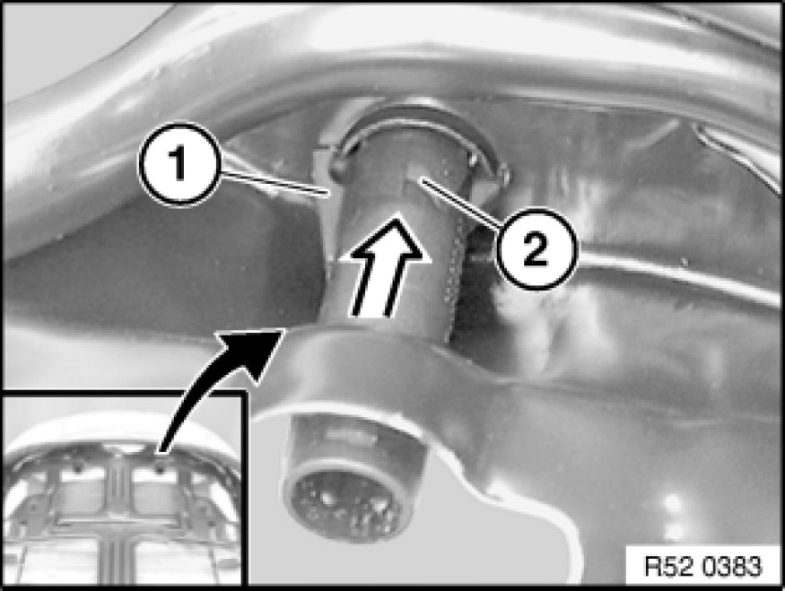

Removing and Installing/Replacing Guide for Front Left or Right Head Restraint
52 13 ... - Removing and installing/replacing guide for front left or right head restraint

Necessary preliminary tasks:
- Remove rear panel on front seat backrest
- Remove head restraint
Guide for head restraint with push-button:
Release catches (1) and (2) and slide guide (3) upwards.
Pull guide (1) out of backrest (2).
Installation Note:
Catches (1) and (2) on guide (3) must not be damaged.
Check that push-button (4) works properly.
After installing guide (3), make sure it is properly seated.

Guide for head restraint without push-button:
Release catches (1) and slide guide (2) upwards.
Pull guide (1) out of backrest (2).
Installation Note:
Catch (1) on guide (2) must not be damaged.
After installing guide (2), make sure it is properly seated.